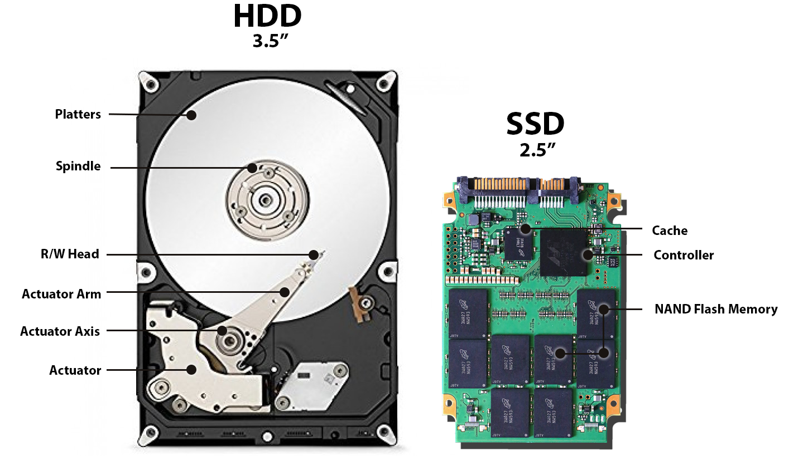

CPU er datamaskinens "hjerne". Den utfører instrukser, beregninger og styrer all programlogikk. Ytelsen avhenger av klokkefrekvens (GHz), antall kjerner og arkitektur. En rask CPU gir bedre respons i alle typer programmer.
GPU er spesialisert for masseparallelle beregninger, spesielt grafikk. Brukes i spill, bildebehandling, video og enkelte typer kunstig intelligens. Avlaster CPU ved å gjøre tunge grafiske oppgaver.
RAM er datamaskinens arbeidsminne. Midlertidig lagring som brukes når programmer kjører. Mer RAM gir bedre multitasking og plass til flere aktive prosesser. Innholdet slettes når maskinen skrus av.
Harddisken er lagringsenheten som tar vare på data permanent, også når maskinen er slått av. I Kode 1 skilles det mellom HDD og SSD. En HDD bruker roterende plater og et lesehode, noe som gir stor lagringskapasitet til en lav pris, men lavere hastighet og høyere risiko for slitasje. En SSD lagrer data i elektroniske minneceller uten bevegelige deler, noe som gjør den mye raskere, mer støtsikker og mer stillegående. Resultatet er at en SSD gir rask oppstart, kjapp programlasting og bedre generell ytelse, og derfor er standard i moderne datamaskiner.
